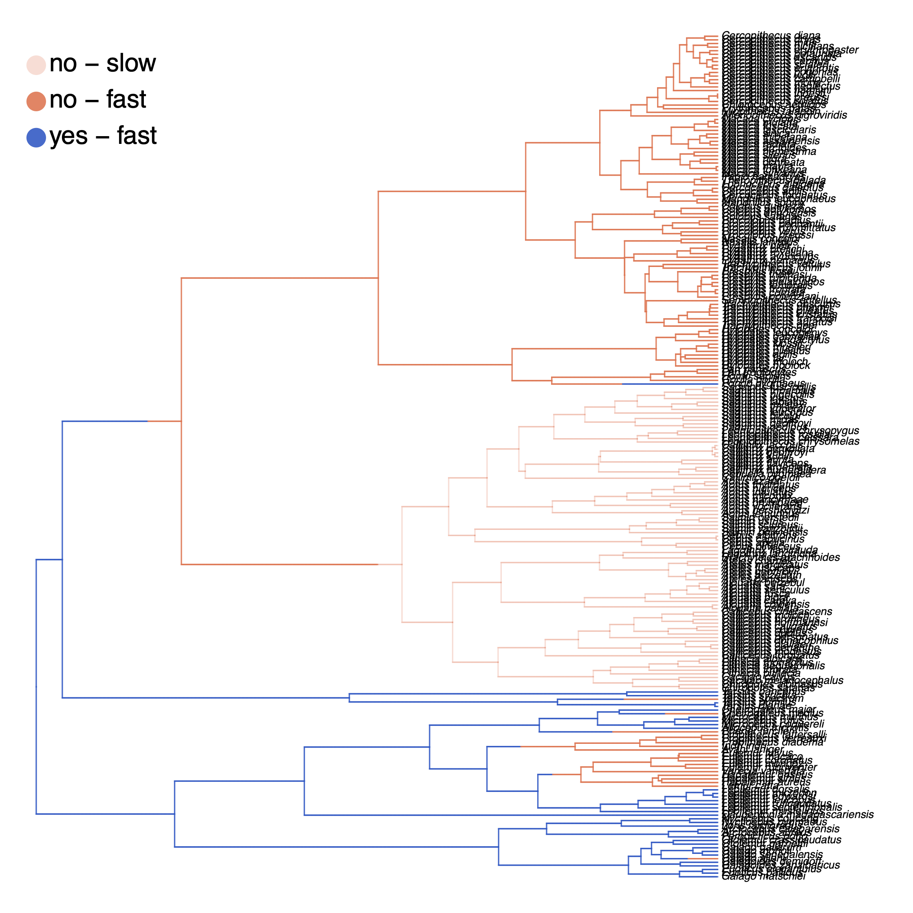
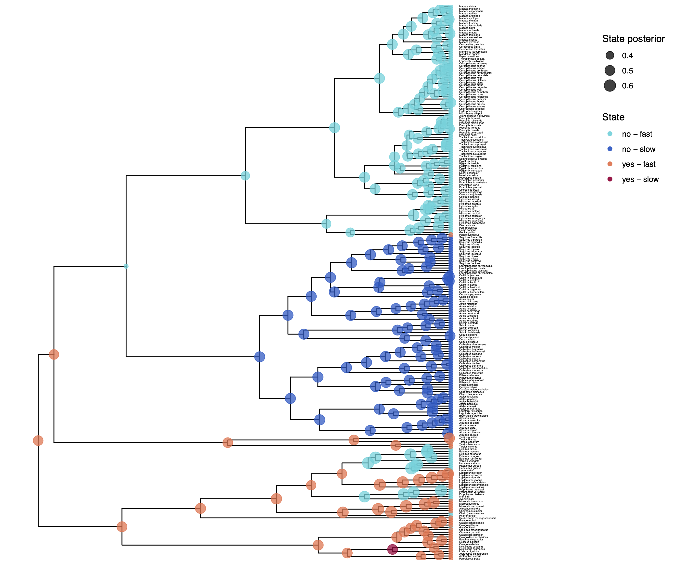
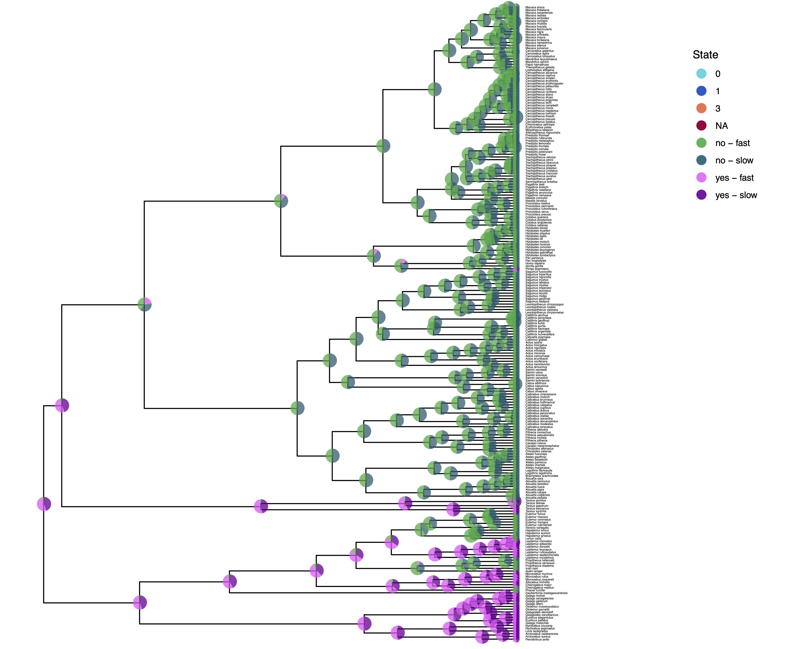

In this tutorial we focus on two new elements. First, we will focus on how to model rate variation among lineages using hidden rate models. Second, we will apply stochastic character mapping to estimate the location of character transitions. Previously, we primarily estimated the ancestral states, which indirectly also show the transitions. Ancestral state estimates are more powerful in their summary in that they show uncertainties of the estimated states. Stochastic character maps are more powerful in showing a specific sequence of changes, especially for somewhat ordered models, such as the hidden rate models. Stochastic character maps could be used to build ancestral state estimates as well, but this is not the purpose here.
Rates of morphological evolution, e.g., rates of gains and losses, might not have been constant over time and/or among different lineages. For example, phylogenetically local clusters of plant lineages appear to transition between herbaceous and woody habits at relatively high rates, so one might want to quantify where these bursts occur (Beaulieu et al. 2013). There are two approaches how to include this rate variation. First, we could employ relaxed clock models (see Relaxed Clocks & Time Trees Tutorial) which are very powerful and flexible. Second, we can use hidden rates models (HRMs). HRMs do not observe the hidden state that induce the mode-shifts. Instead, HRMs expand the character’s state space by a factor of $K$, and observe the character once for each of the $K$ categories. For example, take a binary character modeled with $K=2$ hidden state classes. The model would treat a character that is observed as being in state 0 as possibly being in either of the $K=2$ classes (0,1) and (0,2). In practice, this is done by setting the likelihood of observing those $0k$ states to equal 1, thus, similar as ambiguous characters.
Remember the rate matrix for our independent rates model, \(Q = \begin{smallmatrix} & \begin{smallmatrix}0 & 1\end{smallmatrix} \\ \begin{smallmatrix}0\\1\end{smallmatrix} & \left(\begin{smallmatrix}- & \mu_1\\\mu_2 & -\end{smallmatrix}\right)\\ \end{smallmatrix}\) where we can say that $\mu_1$ is the rate of gain and $\mu_2$ is the rate of loss. Now if we say that there are two rate classes, one where characters evolve fast and the other where characters evolve slow, then we have a 4x4 rate matrix which is \(Q = \begin{smallmatrix} & \begin{smallmatrix}0S & 1S & 0F & 1F\end{smallmatrix} \\ \begin{smallmatrix}0S\\1S\\0F\\1F\end{smallmatrix} & \left(\begin{smallmatrix}- & \mu_{1,s} & \alpha & 0 \\ \mu_{2,s} & - & 0 & \alpha\\ \beta & 0 & - & \mu_{1,f} \\ 0 & \beta & \mu_{2,f} & - \end{smallmatrix}\right)\\ \end{smallmatrix}\) As you can see, we have now 6 parameters. These parameters are:
In principle, one can add arbitrarily many more rate categories, for example, using three rate categories (slow, intermediate and fast) or four rate categories (very slow, slow, fast, very fast). In this tutorial, we show you the basic steps how to set up this hidden rates model with a slow and a fast class.
Let us start with a fresh Rev script. Create an empty text file and call it `mcmc_scm_hrm.Rev.
As before, use the function readDiscreteCharacterData() to load a data matrix to the workspace from a formatted file.
Import the morphological character matrix and assign it to the variable morpho.
morpho <- readDiscreteCharacterData("data/primates_solitariness.nex")
However, now we also need to expand the state space to include the 2 categories.
In RevBayes, the character data matrix has a member function .expandCharacters() which will create these additional categories.
morpho_exp = morpho.expandCharacters( 2 )
To understand better what has happened, let us look at the character data matrices in RevBayes. First, we look at the original character data matrix.
morpho
Standard character matrix with 233 taxa and 1 characters
========================================================
Origination: primates_solitariness.nex
Number of taxa: 233
Number of included taxa: 233
Number of characters: 1
Number of included characters: 1
Datatype: Standard
Notice that the Datatype for this character data matrix is Standard. Now look at the expanded character data matrix.
> morpho_exp
NaturalNumbers character matrix with 233 taxa and 1 characters
==============================================================
Origination:
Number of taxa: 233
Number of included taxa: 233
Number of characters: 1
Number of included characters: 1
Datatype: NaturalNumbers
Notice that the Datatype here is NaturalNumbers.
Let us now also look at how the states are expanded. Again, we look first at the original character data matrix.
> morpho.show()
Allenopithecus_nigroviridis
0
Allocebus_trichotis
1
Alouatta_belzebul
0
Alouatta_caraya
0
Alouatta_coibensis
0
Alouatta_fusca
0
Alouatta_palliata
0
Alouatta_pigra
0
Alouatta_sara
?
...
And next for the expanded character data matrix.
> morpho_exp.show()
Allenopithecus_nigroviridis
(0 2)
Allocebus_trichotis
(1 3)
Alouatta_belzebul
(0 2)
Alouatta_caraya
(0 2)
Alouatta_coibensis
(0 2)
Alouatta_fusca
(0 2)
Alouatta_palliata
(0 2)
Alouatta_pigra
(0 2)
Alouatta_sara
?
...
We see that state 0 (e.g., for Allenopithecus nigroviridis) was expanded to state (0 2) and that state 1 (e.g., Allocebus trichotis) was expanded to (1 3). The state (0 2) means that the species is either in state 0 or state 2, we don’t know which. This is exactly how ambiguous data is coded. It also means that our previous state 0 now corresponds to 0 = No-Slow and 2 = No-Fast. It is important to remember how the state space was expanded to set the rates up correctly.
As before, we need to instantiate a couple “helper variables” that will be used by downstream parts of our model specification files. Create vectors of moves and monitors
moves = VectorMoves()
monitors = VectorMonitors()
As usual for morphological analysis, we assume the phylogeny to be know. Thus, we read in the tree as a constant variable:
phylogeny <- readTrees("data/primates_tree.nex")[1]
Now we need to specify the hidden rates model. Have a look again above at the rate matrix that we need to specify. In the current example, we assume a binary morphological character and two rate categories. This gives 4 states in total and therefore a 4x4 rate matrix.
Start with creating a matrix called rates where all elements are 0.0.
# we will fill the non-zero elements below
for (i in 1:4) {
for (j in 1:4) {
rates[i][j] <- 0.0
}
}
Next, we need to specify some priors for our rates. It is probably quite challenging to have a good idea of a reasonable rate for the hidden category changes, i.e., the rate of changing between the slow and the fast rate categories. We simply assume the same prior as before, that is, we assume on average 10 changes along the given phylogeny.
rate_pr := phylogeny.treeLength() / 10
Next, we need to assume some model how the fast and the slow rates are specified. If we simply use free parameters for $\mu_{1,s}$ and $\mu_{1,f}$, we could easily estimate that $\mu_{1,s} > \mu_{1,f}$ or the other way around. So this model is clearly non-identifiable and we need to restrict that $\mu_{1,s} < \mu_{1,f}$. One option is to say that $\mu_{1,f} = \gamma * \mu_{1,s}$ where $\gamma \leq 1.0$. In words, $\gamma$ is the factor how much the fast rate of gain is faster than the slow rate of gain. An alternative solution is to specify that $\mu_{1}$ comes from a distribution, for example, a lognormal or gamma distribution, and $\mu_{1,i}$ corresponds to the median of the i-th quantile. This approach is analogous in idea to the well known $+\Gamma$ model of among site rate variation for nulceotide evolution (Yang 1994).
We will use the second approach but give some thoughts below on how to specify the first approach. First, we need to specify the prior distribution on the standard deviation of the lognormal distribution. Let us assume an exponential that on standard deviation with mean of $0.587405$, which means that the 95% probability interval of the lognormal distribution spans 1 order of magnitude.
H <- 0.587405
SD_PRIOR <- 1/H
Now that we have the hyper-prior parameters, we can start with the prior distribution. Let us start with the rate of gain.
rate_gain_median ~ dnExponential( rate_pr )
rate_gain_sd ~ dnExponential( SD_PRIOR )
Since these are positive real variable, we apply scaling moves on them.
moves.append( mvScale( rate_gain_median, weight=2 ) )
moves.append( mvScale( rate_gain_sd, weight=2 ) )
Next, we use the prior median and prior standard deviation to construct the median quantiles of the lognormal distribution.
We will use the function fnDiscretizeDistribution, which takes as arguments the distribution and the number of quantiles, which is 2 in our case for 2 rate categories (slow vs fast).
rate_gain := fnDiscretizeDistribution( dnLognormal( ln(rate_gain_median), rate_gain_sd ), 2 )
Now repeat exactly the same for the loss rate.
rate_loss_median ~ dnExponential( rate_pr )
rate_loss_sd ~ dnExponential( SD_PRIOR )
moves.append( mvScale( rate_loss_median, weight=2 ) )
moves.append( mvScale( rate_loss_sd, weight=2 ) )
rate_loss := fnDiscretizeDistribution( dnLognormal( ln(rate_loss_median), rate_loss_sd ), NUM_HIDDEN_STATES )
Finally, we create the two rate variables for the switching rates between the fast and slow rate categories. As mentioned before, we will simply assume an exponential prior distribution with a mean of 10 events along the phylogeny.
switch_slow_fast ~ dnExponential( rate_pr )
switch_fast_slow ~ dnExponential( rate_pr )
We also should not forget the moves on the switching rates. We will use as usual the scaling move since these are rate variables (positive real numbers).
moves.append( mvScale( switch_slow_fast, weight=2 ) )
moves.append( mvScale( switch_fast_slow, weight=2 ) )
Now we have created all the rate variables. We need to connect them to our rate matrix. As a help, look again at the rate matrix described in the introduction.
rates[1][2] := rate_gain[1] # 0S->1S
rates[1][3] := switch_slow_fast # 0S->0F
rates[2][1] := rate_loss[1] # 1S->0S
rates[2][4] := switch_slow_fast # 1S->1F
rates[3][1] := switch_fast_slow # 0F->0S
rates[3][4] := rate_gain[2] # 0F->1F
rates[4][2] := switch_fast_slow # 1F->1S
rates[4][3] := rate_loss[2] # 1F->2F
Finally, we can create our transition rate matrix Q using the rate matrix function fnFreeK.
Q_morpho := fnFreeK(rates, rescaled=FALSE)
For this model, we also want to specify parameters for the root frequencies $\pi$, and thus also their prior distributions. We assume a flat Dirichlet distribution, which assigns each combination of root frequencies the exact same prior probability. Remember that we 2 states for the observed characters and 2 states for the rate categories. Thus we need a vector of 2*2 filled with ones.
rf_prior <- rep(1,2*2)
We use this for our Dirichlet distribution.
rf ~ dnDirichlet( rf_prior )
We apply two different moves to the root frequencies, a mvBetaSimplex that changes a single frequencies and rescales the other frequencies, and a mvDirichletSimplex that redraws all root frequencies together.
moves.append( mvBetaSimplex( rf, weight=2 ) )
moves.append( mvDirichletSimplex( rf, weight=2 ) )
Lastly, we set up the CTMC.
Not that this time we need to specify the type=NaturalNumbers, as we saw this is used in the expanded data matrix.
phyMorpho ~ dnPhyloCTMC(tree=phylogeny, Q=Q_morpho, rootFrequencies=rf, type="NaturalNumbers")
We conclude the model specification by attaching the expanded data matrix to the CTMC object.
phyMorpho.clamp(morpho_exp)
We can now create our workspace model variable with our fully specified model DAG.
We will do this with the model() function and provide a single node in the graph (phylogeny).
mymodel = model(phylogeny)
The object mymodel is a wrapper around the entire model graph and allows us to pass the model to various functions that are specific to our MCMC analysis.
In this exercise we wanted to explore stochastic character mapping.
Stochastic character mapping, similar to ancestral state estimation, is achieved in RevBayes using the help of monitors, specifically the mnStochasticCharacterMap monitor.
We will specify the same model monitor (mnModel), screen monitor (mnScreen) and ancestral state monitor (mnJointConditionalAncestralState) as before (Discrete morphology - Ancestral State Estimation).
# 1. for the full model #
monitors.append( mnModel(filename="output/solitariness_hrm.log", printgen=1) )
# 2. and a few select parameters to be printed to the screen #
monitors.append( mnScreen(printgen=10) )
# 3. add an ancestral state monitor
monitors.append( mnJointConditionalAncestralState(tree=phylogeny,
ctmc=phyMorpho,
filename="output/solitariness_hrm.states.txt",
type="NaturalNumbers",
printgen=1,
withTips=true,
withStartStates=false) )
Now add the new stochastic character mapping monitor, mnStochasticCharacterMap.
This monitor also requires that you specify the CTMC object, which is phyMorpho in our example, and output filename, the frequency how often you want to generate stochastic character maps, e.g., once every iteration or every 10 generations, and whether we want to include the simmap states (yes, very important).
# 4. add an stochastic character map monitor
monitors.append( mnStochasticCharacterMap(ctmc=phyMorpho,
filename="output/solitariness_hrm_stoch_char_map.log",
printgen=1,
include_simmap=true) )
This monitor will create the output/solitariness_hrm_stoch_char_map.log file.
Just like the other log files, each row in this file represents a different sample from the MCMC.
Each column in the file, though, is the character history for a different node in the phylogeny.
Setup the MCMC analysis as before (Discrete morphology - Ancestral State Estimation). This will run 2 replicated MCMC runs with 5,000 iterations and auto-tuning the moves every 200 iterations.
mymcmc = mcmc(mymodel, monitors, moves, nruns=2, combine="mixed")
mymcmc.run(generations=5000, tuningInterval=200)
After the MCMC simulation, we can calculate the maximum a posteriori marginal, joint, or conditional character history. As before (Discrete morphology - Ancestral State Estimation), we will compute the ancestral state estimates.
# Read in the tree trace and construct the ancestral states (ASE) #
anc_states = readAncestralStateTrace("output/solitariness_hrm.states.txt")
anc_tree = ancestralStateTree(tree=phylogeny, ancestral_state_trace_vector=anc_states, include_start_states=false, file="output/solitariness_ase_hrm.tree", burnin=0.25, summary_statistic="MAP", site=1, nStates=2*2)
In a very similar way, we summarize the output of the stochastic character mapping. First, we load in the ancestral state trace (sampled character histories)
anc_states_stoch_map = readAncestralStateTrace("output/solitariness_hrm_stoch_char_map.log")
Then we use the characterMapTree function.
This generates two SIMMAP (Bollback 2006)
formatted files:
1) the maximum a posteriori character history,
and 2) the posterior probabilities of the entire character history.
These can be plotted using the phytools R package (Revell 2012).
char_map_tree = characterMapTree(tree=phylogeny,
ancestral_state_trace_vector=anc_states_stoch_map,
character_file="output/solitariness_hrm_marginal_character.tree",
posterior_file="output/solitariness_hrm_marginal_posterior.tree",
burnin=0.25,
num_time_slices=500)
This is all you need for this analysis. Don’t forget to quit RevBayes at the end of the script.
# Quit RevBayes #
q()
This is all that you need to do for the rate variation analysis with hidden rate categories and stochastic character mapping. Save your script and give it a try!
We have previously plotted the ancestral states, both the maximum a posterior (MAP) states as well as the posterior probabilities of all states shown as pie chart Discrete morphology - Ancestral State Estimation.
You should repeat plotting the ancestral states now also for the hidden rates model (hrm) analyses.
My output is shown in .
Finally, we also want to plot the stochastic character mapping. Unfortunately, this cannot be done yet in RevGadgets and instead we are going to use phytools (Revell 2012). Here is a slightly simplified version of the script whithout changing the color scheme.
library(plotrix)
library(phytools)
character_file = "output/solitariness_hrm_marginal_character.tree"
sim2 = read.simmap(file=character_file, format="phylip")
colors = vector()
for (i in 1:length( sim2$maps ) ) {
colors = c(colors, names(sim2$maps[[i]]) )
}
colors = sort(as.numeric(unique(colors)))
col_idx = colors + 1
cols = setNames( rainbow(length(colors), start=0.0, end=0.9), colors)
cols = cols[col_idx]
pdf( "Primates_solitariness_HRM_simmap.pdf" )
plotSimmap(sim2, cols, fsize=0.5, lwd=1, split.vertical=TRUE, ftype="i")
# add legend
x = 0
y = 225
leg = c("no - slow", "yes - slow", "no - fast", "yes - fast")
leg = leg[col_idx]
colors = cols
y = y - (0:(length(leg) - 1))*10
x = rep(x, length(y))
text(x + 0.005, y, leg, pos=4, cex=1.15)
mapply(draw.circle, x=x, y=y, col=colors, MoreArgs = list(nv=200, radius=1, border="white"))
dev.off()
  
How can you explain the observed allocation of clades to the slow and fast rate categories? Do ancestral state estimates match with the stochastic character maps? How certain are we in the ancestral state estimates?
Click below to begin the next exercise!